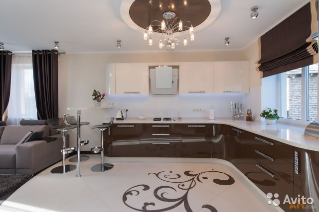
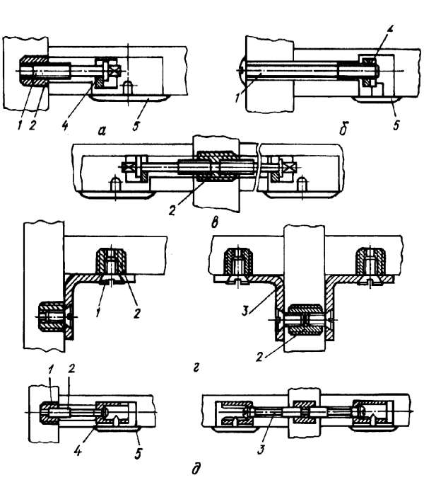
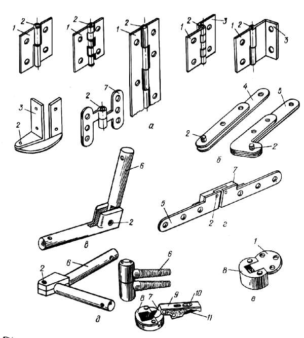
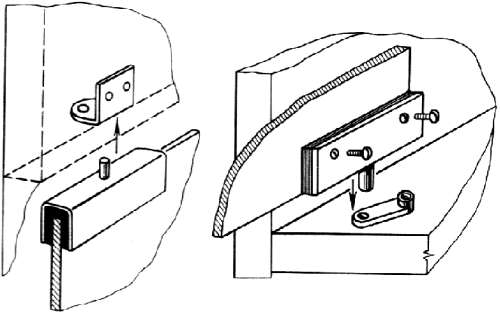
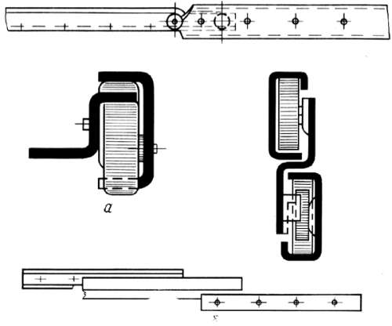
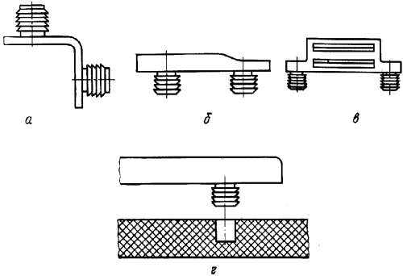

Разъемные соединения.

В мебельных соединениях весьма распространены соединения шурупами, хотя они считаются трудоемки. Соединения шурупами применяют для крепления фурнитуры и других элементов.
Шурупы различают в зависимости от длины резьбы и формы головки. Форма головки бывает полукруглая, плоская (потайная), полупотайная и шестигранная. На поверхности головки есть прорезь в форме паза или двух перекрещивающихся пазов для довинчивания шурупа.
Прочность соединения шурупами выше гвоздевого соединения. Сопротивление выдергиванию шурупа зависит от его размеров, длины резьбы и материала соединяемых деталей. Чем выше плотность материала, тем прочнее соединение. Прочность соединения шурупами, ввинченными вдоль волокон, почти в 2 раза ниже прочности соединения шурупами, у которых ось перпендикулярна направлению волокон. По-разному удерживают шуруп пласть и кромка древесностружечной плиты (сопротивление выдергиванию из кромки плиты очень незначительное).
Размер шурупа выбирается в зависимости от предполагаемых нагрузок и толщины присоединяемой детали. Шуруп должен войти в деталь, к которой производят крепление, на ?-2/3 всей длины. С каждым увеличением диаметра шурупа на 0,5 мм сопротивление выдергиванию увеличивается до 0,5 МПа, а при увеличении глубины ввертывания на каждые 5 мм сопротивление выдергиванию увеличивается до 3 МПа. Длина резьбы должна быть равной глубине ввинчивания, поэтому для крепления тонких деталей надо брать шурупы, имеющие нарезку резьбы по всей длине.
При соединении деталей шурупами в деталях необходимо выбирать отверстия. Диаметр отверстия у прикрепляемой детали равен диаметру шурупа в ненарезанной части. Диаметр отверстия у детали, относительно которой производят крепление, равен внутреннему диаметру резьбы шурупа.
Применяют шурупы для установки многих видов петель, защелок, задвижек, направляющих и др., для крепления конструктивных элементов небольшой толщины (стенок и дна ящика).
Несмотря на то, что шурупы относятся к разборным соединениям, многократно собирать и разбирать их не рекомендуется, так как прочность соединения каждый раз снижается на 10%.
Соединения с помощью стяжек. Стяжки – это специальное крепежное устройство, которое обеспечивает необходимую плотность и прочность соединения элементов, расположенных друг относительно друга в определенном положении. Чаше всего стяжки соединяют элементы под углом 90?.

Рис. 56. Соединения стяжками: а–г – винтовыми (1 – винт; 2 – гайка; 3 – уголок; 4 – шайба; 5 – заглушина); д – эксцентриковой (1 – гайка, 2,3 – винт или стержень; 4 – эксцентрик, 5 – заглушина)
Стяжки должны обеспечивать быструю и надежную сборку изделия, не мешать его эксплуатации и не ухудшать внешний вид. Конструкция стяжек должна исключать возможность самопроизвольного разъединения элементов при нормальной эксплуатации. Различают следующие основные типы стяжек: винтовые, эксцентриковые и крючковые.
Винтовые стяжки применяются нескольких видов. Они отличаются проработкой отдельных элементов, но главными деталями всех винтовых стяжек являются винт и гайка. Прочность крепления элементов стяжки обеспечивается за счет резьбового соединения.
На рисунке (а–в) показана винтовая стяжка, которая состоит из винта, гайки, шайбы и заглушины. Этот вид стяжки можно использовать для угловых концевых и серединных соединений стенок корпусной мебели. Эти соединения достаточно прочные. Крепежные элементы стяжки располагают в отверстиях, закрытых заглушиной, поэтому возможна установка стяжка на открытых участках изделия. Стяжка не ухудшает эстетические и функциональные качества изделий. К недостаткам стяжки этого вида относят большую трудоемкость установки. При изготовлении мебели в домашних условиях производительность труда принципиального значения не имеет, так что эта конструкция вполне применима.
Стяжка под буквенным индексом «б» также содержит винт, гайку и заглушину. Она обеспечивает большую прочность, чем стяжка «а», но ее недостатком является выход головки винта на лицевую поверхность изделия, что ухудшает внешний вид мебели и исключает возможность блокирования изделий в «стенку».
Оба типа винтовых стяжек требуют при сборке корпусов дополнительной фиксации стенок шкантами.
Стяжка, представленная на рисунке под индексом «г», состоит из гаек, уголка, винта. Она прочно соединяет стенки корпуса изделия, дополнительной фиксации стенок шкантами не требуется. Но выход крепежных элементов наружу изделия ухудшает внешний вид и снижает функциональнее и эстетические качества. В высококачественных мебельных изделиях эти недостатки недопустимы.
Эксцентриковые стяжки бывают нескольких видов. Основные элементы этого типа стяжки – гайка, винт или стержень, эксцентрик и заглушина. Ось эксцентрика смещена относительно оси его вращения. Поворотом эксцентрика осуществляется его заклинивание, что и обеспечивает соединение. Это соединение уступает по прочности соединению на винтовых стяжках, но менее трудоемко. Оба вида стяжек обеспечивают аналогичные эстетические и функциональные качества изделия.
Крючковые стяжки конструктивно очень просты. Это металлические пластины с вырезами и крючками, посредством которых они соединяются друг с другом. Пластины крепят шурупами. Крючковые стяжки можно применять в случаях, когда соединения испытывают нагрузки в одном направлении.
Соединения на петлях едва ли не самые распространенные. В мебельных изделиях применяют следующие типы петель: карточные, пятниковые, стержневые, ломберные, четырехшарнирные и двухшарнирные. Петли применяют для навески дверей, крепления откидных крышек столов.
Петли карточные состоят из двух пластин, соединенных шарнирно. Петли могут быть разъемными и нepазъемными, правого и левого исполнения. Разъемные петли более технологичны, так как их установка требует меньших трудозатрат. Крепят карточные петли шурупами к кромке или пласти двери и вертикальной стенке корпуса. Из-за недостаточной прочности крепления шурупами в кромке древесностружечной плиты, карточные петли делают изогнутыми или упрочняют кромки плит.

Рис. 57. Петли для навески щитовых дверей: а – одношарнирные карточные; б – одношарнирные пятниковые; в – одношарнирные стержневые, г – петля двухшарнирная ломберная; д – четырехшарнирная комбинированная; е – двухшарнирная комбинированная; 1, 3 – карты; 2 – ось; 4, 5 – пластины; 6 – стержень, 7 – серьга; 8 – чаша; 9 – корпус; 10 – винт, 11 – планка
Разновидностью карточных петель является рояльная петля. Ее крепят на всю длину двери. Большое число шурупов, используемых для ее установки, делает этот вид петли нетехнологичным, что и ограничивает ее применение.
Пятниковые петли состоят из пластин, поворачивающихся в горизонтальной плоскости. Пластины крепят к кромкам дверей, в которых выбирают углубления на толщину пластины, и к горизонтальным стенкам корпуса. Выход элементов этой петли на лицевые поверхности ухудшает внешний вид изделия. Кроме того, кромки дверей из древесностружечных плит при установке этих петель необходимо упрочнять, что снижает технологичность конструкции. Эти недостатки ограничивают применение пятниковой петли.
Для навески стеклянных распашных дверей используют пятниковые петли в виде металлической скобы с осью. В скобу устанавливают прокладки, а между ними – стеклянное полотно двери, которое фиксируют винтами. Ось вставляют в отверстие металлической пластины, прикрепленной к горизонтальным стенкам корпуса шурупами. Петля обеспечивает прочное и надежное соединение.

Рис. 58. Петли для навески стеклянных дверей
Стержневые петли устанавливаются в кромку двери. Эти петли состоят из двух стержней (гладких или с резьбой) и фиксирующего винта. Прочность соединения стержневыми петлями зависит от упругих свойств материала, в который вставляются стержни.
Ломберные петли обеспечивают поворот вокруг оси на 180°. Они состоят из двух пластин, прикрепляющихся шурупами, оси и серьги. Ломберные петли применяют для установки откидных полукрышек столов.
Четырехшарнирные петли – более распространенный тип разъемного соединения. Они состоят из корпуса, планки и установочного винта. Корпус и планку крепят соответственно к двери и стенке шурупами, а соединяют установочным винтом, с помощью которого можно регулировать навеску двери – зазор между дверью и величину выступа боковой стенки.
Четырехшарнирные петли бывают без фиксации и фиксирующими, обеспечивающими плотное примыкание двери к корпусу изделия. Фиксация осуществляется за счет специальных пружин в корпусе петли.
Эти петли обеспечивают надежное и высоко технологичное соединение.
Для установки откидных дверей применяют двухшapнирные (секретерные) петли. Они состоят из пластин и корпуса, которые соединены между собой шарнирно. Пластину крепят к горизонтальной стенке изделия, а корпус крепят к двери.
Для установки ящиков, полок, раздвижных дверей используют направляющие. Они бывают роликовые и телескопические, в виде планок и полозков. Направляющие к стенкам изделий крепят шурупами, гвоздями, скобами или вставляют в пазы стенок. Планки и полозки изготовляют из древесины, металла, фанеры, полимерных материалов. Конструктивно направляющие делят на одинарные и двойные, врезные и накладные.

Рис. 59. Направляющие: а – телескопические; б – роликовые
Телескопические направляющие обеспечивают плавное выдвижение ящика с нагрузкой до 250 Н на всю его глубину. Телескопический механизм состоит из верхней и нижней направляющих и каретки. Верхняя и нижняя направляющие имеют по четыре отверстия под шурупы. Каретка снабжена четырьмя вращающимися роликами, при помощи которых происходит ее движение в направляющих. На верхней направляющей установлен неподвижный упор – ограничитель хода каретки. На нижней направляющей установлен свободно вращающийся ролик, ограничивающий ход направляющей и способствующий легкому перемещению каретки.
Направляющие и каретки изготовлены из листового металла (сталь или алюминиевый сплав), а ролики – из полиэтилена низкого давления или полиамида. Упоры резиновые.
Более просты конструктивно нетелескопические роликовые направляющие. Они состоят из нижней и верхней планок и роликов.
Бесшурупная фурнитура. Основным элементом при креплении бесшурупной фурнитуры является дюбельный элемент, отлитый заодно с ее корпусом. Дюбель имеет форму с заостренными кольцевыми или полукольцевыми выступами. Высота втулок в зависимости от вида фурнитуры составляет 10, 12 мм, диаметр – 8,7; 11,5; 35,8 мм. Бесшурупную фурнитуру устанавливают на специальном оборудовании методом запрессовывания дюбелей в заранее высверленные отверстия.

Рис. 60. Бесшурупная фурнитура: а – стяжка, б – планка петли, в – магнитная защелка, г – схема установки
Не всегда крепежные дюбели можно отлить заодно с изделием фурнитуры, поэтому иногда их крепят с помощью резьбовых соединений.